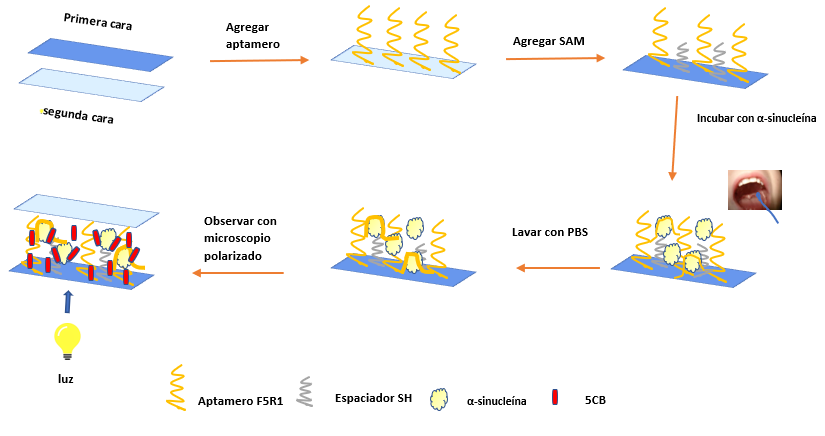
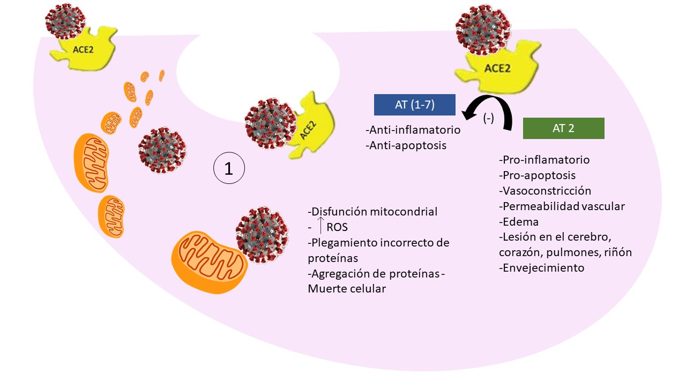
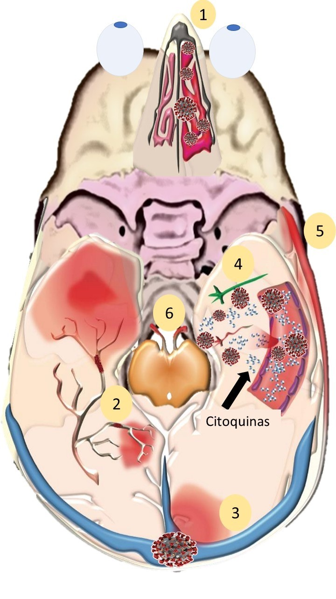
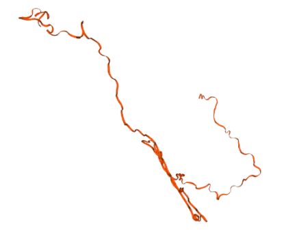
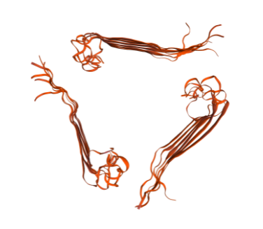

Diseño de un biosensor constituido por cristales líquidos para la detección de problemas neurológicos causados por COVID-19
Coronavirus (CoV) es un grupo de virus de ARN, los cuales son patógenos en humanos y han sido responsables de dos epidemias, las cuales son: el Síndrome Respiratorio de Oriente Medio (MERS-CoV) y el Síndrome Respiratorio Agudo Severo (SARS-CoV).
La Organización Mundial de la Salud (OMS), informó en diciembre del 2019, una serie de casos de neumonía viral de causa desconocida, la cual comenzó en Wuhan, China. Por ello, un análisis de secuenciación a partir de muestras de vías respiratorias, demostró un nuevo coronavirus, que fue llamado coronavirus de 2019 (COVID-19). Esta pandemia ha traído una gran problemática en la actualidad, debido a que afecta considerablemente la salud de todos, así como la economía y la calidad de vida de la población.
Los Objetivos de Desarrollo Sostenible de la Agenda 2030, son mecanismos que permitirán a la población, participar en la búsqueda de soluciones para las problemáticas actuales. El objetivo en el cual se enfocará este proyecto es el objetivo 3 “SALUD Y BIENESTAR”, que consiste en garantizar una vida sana y promover el bienestar para todas y todos en todas las edades. Como podemos observar, la pandemia debida a la enfermedad por COVID-19, es una problemática de la cual debemos buscar soluciones para contribuir a mejorar la situación actual, debido a esto, forma parte del objetivo propuesto por la Organización de las Naciones Unidas (ONU).
En el Club 5 “Cristales líquidos en tus células y en tu celular”, aprendimos la importancia de los cristales líquidos (CL), ya que, trabajamos de manera experimental observando los fenómenos en los que se involucran los cristales líquidos, así mismo conocimos sus múltiples aplicaciones en los diferentes ámbitos.
Gracias a estos conocimientos utilizamos las bases experimentales y teóricas acerca de los CL, incluyendo sus diferentes tipos. Los CL están formados por estructuras biológicas como virus, proteínas y ADN. Dentro de las aplicaciones potenciales que poseen los CL, está la parte biológica, por ello, el desarrollo y el diseño de un biosensor que a través de CL sea capaz de detectar los daños neurológicos en pacientes que sufrieron la enfermedad por COVID-19, es una de ellas.
Se ha demostrado en diversos estudios que dentro de las aplicaciones en medicina el uso de los CL, ha captado la atención de la comunidad científica y de nosotros los estudiantes, debido a sus propiedades químicas como lo son la birrefringencia y propiedades fisicoquímicas que les permiten adoptar una conformación posicional diferente cuando estas encuentran y se unen a un objetivo específico obteniendo así, un uso como biosensores debido a su cambio orientacional y posicional que es observado mediante una señal óptica.
Por lo que, han sido utilizados para una amplia variedad de compuestos químicos, como lo son las proteínas, los péptidos, los fosfolípidos y el DNA. Así como en la detección de enfermedades neurológicas (Parkinson y Alzheimer).
Debido a la pandemia por COVID-19, diversos artículos señalan la relación entre el SARS-COV-2 y las enfermedades neurológicas. A través de las secuelas causadas por la enfermedad de COVID-19, se ha demostrado que los pacientes empiezan a tener daños neurológicos, como meningitis, daño neuronal, encefalopatía y accidentes cerebrovasculares, siendo este último un posible precursor a que los pacientes infectados por SARS-COV-2 sean propensos a desarrollar enfermedades neurodegenerativas. El proponer un método de detección a la predisposición o en el proceso de la patología del Parkinson del paciente resulta de interés para el estudio de la relación entre ambas enfermedades.
METODOLOGÍA
El desarrollo del biosensor se fundamenta en el artículo “A Novel-free liquid Crystal biosensor for parkinson's disease Related Alpha-Synuclein” publicado en la revista científica Royal Society of Chemistry, nuestra propuesta consiste en modificar la muestra biológica para la detección de la proteína alfa-sinucleína la cual es una biomolécula que se encuentra ampliamente diseminada en las neuritas y cuerpos de Lewy que se ensambla en forma filamentosa y que debido a su incorrecto plegamiento y propagación causa una inflamación y daño a las neuronas. La alfa-sinucleína ya ha sido detectada en sangre y fluido cerebroespinal, sin embargo una alternativa para hacer un prueba rápida, de fácil obtención y no invasiva es mediante una muestra de saliva recolectada a través de un hisopo del paciente en cuestión.
Para la construcción del biosensor el aptámero F5R1 a una concentración 45 nM (en amortiguador PBS y pH=7.4) es anclado mediante un enlace químico tiol-oro a un vidrio recubierto de oro el cual será la cara superior del biosensor; para asegurar la unión del aptámero con la alfa-sinucleína, se coloca en el extremo 5´ de la cadena -(CH2)6-TTT lo cual le confiere la flexibilidad necesaria al aptámero para su unión con la proteína de interés, seguido de dos horas de incubación, posteriormente se lava y se pone a secar.
Más adelante, se modifica lo que será la cara inferior del biosensor agregando al vidrio una mezcla de SAM (C10SH y C16SH) el cual es conocido por propiciar una alineación del cristal líquido a una fase isotrópica/perpendicular. Al tener las dos caras del biosensor estas se pliegan dejando una grosor aproximado de 20 micrómetros; asegurando que ambas estructuras de vidrio queden plegadas se añaden unos clips para evitar su separación, al quedar unidas las dos placas de vidrio es el momento de agregar el cristal líquido 4-ciano-4-pentilbifenil (5CB) entre las dos placas mediante capilaridad procediendo a enfriar el biosensor para que los cristales líquidos pasen a su fase nemática.
La cantidad de alfa-sinucleína detectada para hacer un biosensor funcional mencionada en el artículo es de 50-400 nM para el plasma y fluido cerebroespinal, por lo que para la muestra de saliva nosotros proponemos realizar un diseño experimental en el que se utilice el mismo rango de concentración y así verificar si esta técnica facilita la detección de esta proteína mediante microscopía de luz polarizada de una forma fácil y sencilla que pueda ser viable junto con la técnica descrita en el artículo.
Figura 1. Diagrama de biosensor constituido de Cristales líquidos (CL) para la detección de α-sinucleína, la primera cara se compone del aptámero F5R1 y -(CH2)6-TTT, la segunda cara se compone de SAM. Al unir ambas caras del biosensor con CL (5CB) e introducir alfa-sinucleína mediante análisis por microscopía polarizada el biosensor pasará de observarse oscuro debido a la conformación alineada del CL a emitir una señal óptica debida al cambio posicional-orientacional del CL causada por la unión específica F5R1-α-sinucleína.
RESULTADOS
Los CoV son virus respiratorios con capacidades neurotrópicas, que les permiten evitar la respuesta inmune y causar complicaciones neurológicas asociadas a su infección.
Actualmente, sólo existen seis informes que describen las manifestaciones neurológicas del SARS-CoV-2 en pacientes con COVID-19, en los que 173 de 756 pacientes presentaron manifestación neurológica. En un informe de caso de 214 pacientes con COVID-19 en Wuhan, China, se observó manifestación neurológica como enfermedades cerebrovasculares agudas y deterioro del conocimiento en el 36.4% de todos los pacientes y alrededor del 88% (78/88) de pacientes con complicaciones graves.
Para el deterioro de la conciencia, se reportó en el 37% de los pacientes hospitalizados con COVID-19, en Wuhan. Hay varios mecanismos posibles de alteración de la conciencia en pacientes con COVID-19, incluida la infección directa y el daño del parénquima, la encefalopatía tóxico-metabólica, las convulsiones o la enfermedad desmielinizante.
Las neuronas contienen niveles significativos de ACE2 (enzima convertidora de angiotensina 2) y, por lo tanto, el SARS-CoV-2 puede penetrarlas e interrumpir su mecanismo celular para la producción de energía (mitocondrias) y el plegamiento de proteínas. El SARS-CoV-2, así como otros coronavirus, pueden permanecer dentro de algunas neuronas sin ser agudamente tóxicos. El mal plegamiento anormal y la agregación de proteínas en pacientes que sobreviven y se recuperan de su infección aguda por SARS-CoV-2 pueden, por lo tanto, teóricamente conducir a la degeneración cerebral décadas después. Dado que algunos de los efectos del SARS-CoV-2 pueden manifestarse meses o años después de la infección, será necesario hacer un seguimiento constante con los pacientes que se han visto afectados por covid-19. Mantener registros precisos de pacientes de COVID-19 con déficits neurológicos puede permitir establecer conexiones plausibles con trastornos neurodegenerativos y asociados al envejecimiento como la enfermedad de Parkinson en el futuro.
Existe un vínculo entre el SARS-CoV-1 y un mayor riesgo de desarrollar la enfermedad de Parkinson y la esclerosis múltiple
En este momento, nos encontramos en las primeras etapas de la pandemia, por lo que el enfoque se ha centrado en el tratamiento agudo de las consecuencias potencialmente mortales de COVID-19, como embolia pulmonar, infartos de miocardio, encefalitis, insuficiencia renal, parálisis y coma. Sin embargo, es muy probable que la tormenta de citoquinas y los insultos al cerebro a través de accidentes cerebrovasculares pequeños o grandes y altos niveles de inflamación dentro del cerebro tendrían consecuencias neuropsiquiátricas a largo plazo.
Se considera que durante los próximos años, en los centros de salud de todo el mundo, se observará una ola de pacientes que presentan depresión, trastorno de estrés postraumático, ansiedad, insomnio o psicosis, así como deterioro cognitivo.
La tormenta de citoquinas en COVID-19 puede causar una serie de pequeños accidentes cerebrovasculares sin causar déficits neurológicos notables. Pero cuando los pacientes abandonan el hospital después de una infección aguda por SARS-CoV-2, pueden experimentar poca memoria y atención de procesamiento lenta. Por lo tanto, sería útil para estos pacientes ver a un neurólogo o someterse a pruebas neurocognitivas 6 a 8 meses después de su alta hospitalaria si sienten que todavía tienen problemas cognitivos, lentitud en el procesamiento de la información o atención deficiente.
Figura 2. SARS-CoV-2: Mecanismo celular de acción. El SARS-CoV-2 se une a ACE2 para entrar en las células epiteliales de los vasos sanguíneos y las células en múltiples otros órganos. 1) Una vez internalizado, puede causar daño a las mitocondrias y a los lisosomas que a su vez pueden dar lugar a la especie reactiva creciente del oxígeno (ROS), a la agregación de la proteína, y a la muerte celular. 2) Al unirse a ACE2, el SARS-CoV-2 también regula a la baja e inhibe la conversión metabólica de la angiotensina 2 (AT2) a AT (1-7). Los niveles más altos resultantes de AT2 se asocian con marcadores proinflamatorios, vasoconstricción, permeabilidad vascular y edema, lesión vascular a las células en los pulmones, el cerebro, el corazón y los riñones, así como procesos involucrados en la apoptosis y el envejecimiento. Imagen tomada de Fotuhi et al., (2020).
Figura 3. SARS-CoV-2: Fisiopatología de acción en la nariz, los nervios craneales y el cerebro. El SARS-CoV-2 puede causar una variedad de síntomas neurológicos en pacientes con COVID-19, como anosmia, accidentes cerebrovasculares, encefalopatía, meningitis y lesión del nervio craneal. 1) Al unirse e inhibir las células epiteliales nasales (y gustativas, no mostradas), reduce el sentido del olfato y el gusto. 2) Activando las citoquinas y los caminos de la hipercoagulación en la sangre, da lugar a la formación de obstrucción pequeña y grande del recipiente en arterias cerebrales. 3) La formación de coágulos de sangre en las venas cerebrales puede resultar en trombosis venosa cerebral. 4) Los altos niveles de citoquinas en los vasos cerebrales pueden dañar la barrera hematoencefálica, y una vez infiltrados en el cerebro, dañar las neuronas, lo que resulta en convulsiones y/o encefalopatía. 5) El daño a las arterias en las meninges puede resultar en meningitis. 6) La formación de autoanticuerpos, conocidos como mimetismo molecular, pueden conducir a daños a los nervios craneales. Imagen tomada de Fotuhi et al., (2020).
Las secuelas a largo plazo del COVID-19 pueden ser: la depresión, el TOC, el insomnio, el deterioro cognitivo, el envejecimiento acelerado, la enfermedad de Parkinson o la enfermedad de Alzheimer.
Por ello, la propuesta del diseño de un biosensor de CL que sea capaz de detectar las proteínas alfa sinucleína y la beta amiloide, representa una gran oportunidad para el diagnóstico oportuno de la enfermedad de Alzheimer y de Parkinson, las cuales representan los daños neurológicos causados por COVID-19. La muestra que se plantea utilizar para que no sea invasiva, es emplear la saliva del paciente que anteriormente padeció COVID-19.
Se sabe que un biosensor de CL tiene la capacidad de detectar la alfa-sinucleína relacionada con la enfermedad de Parkinson (EP). Este biosensor permite el diagnóstico temprano de la EP.
Figura 4. Alfa-sinucleína modelada mediante SWISS MODEL de Expasy.
Por su parte, se podría utilizar el biosensor de CL detectando la beta-amiloide, la cual está relacionada con la enfermedad de Alzheimer.
Figura 5. Beta-amiloide modelada mediante SWISS MODEL de Expasy.
CONCLUSIÓN
Los pacientes con COVID-19 pueden presentar una amplia gama de manifestaciones neurológicas que pueden deberse a la lesión del Sistema Nervioso Central y Periférico a través de una tormenta de citoquinas, coágulos de sangre y daño directo por SARS-CoV-2. Las evaluaciones estandarizadas como los biomarcadores de fluidos, las evaluaciones cognitivas y la neuroimagen multimodal también pueden proporcionar información sobre posibles secuelas neurológicas a largo plazo en COVID-19, como la depresión, la pérdida de memoria, el deterioro cognitivo leve, la enfermedad de Alzheimer o el Parkinson. El biosensor elaborado mediante CL, representa una alternativa a bajo costo, además de tener la capacidad de ser no invasiva, por lo que sin duda alguna, es una propuesta que permitiría detectar las enzimas como la alfa sinucleína y la beta amiloide, las cuales son detectadas para el Parkinson y para el Alzheimer, respectivamente. De esta manera, se podría observar y detectar los daños neurológicos causados por la COVID-19.
Si deseas conocer más acerca de los cristales líquidos como biosensores, te invitamos a conocer los proyectos de nuestros compañeros:
REFERENCIAS
- [1] Ellul, M., Benjamin, L., Singh, B., Lant, S., Michael, B., & Easton, A. et al. (2020). Neurological associations of COVID-19. The Lancet Neurology, 19(9), 767-783. https://doi.org/10.1016/s1474-4422(20)30221-0
- [2] Fotuhi, M., Mian, A., Meysami, S., & Raji, C. (2020). Neurobiology of COVID-19. Journal Of Alzheimer's Disease, 76(1), 3-19. https://doi.org/10.3233/jad-200581
- [3] Mao, L., Jin, H., Wang, M., Hu, Y., Chen, S., & He, Q. et al. (2020). Neurologic Manifestations of Hospitalized Patients With Coronavirus Disease 2019 in Wuhan, China. JAMA Neurology, 77(6), 683. https://doi.org/10.1001/
jamaneurol.2020.1127
- [4] Sharifian-Dorche, M., Huot, P., Osherov, M., Wen, D., Saveriano, A., & Giacomini, P. et al. (2020). Neurological complications of coronavirus infection; a comparative review and lessons learned during the COVID-19 pandemic. Journal Of The Neurological Sciences, 417, 117085 https://doi.org/10.1016
/j.jns.2020.117085
- [5] Xu, Y., Rather, A., Song, S., Fang, J., Dupont, R., & Kara, U. et al. (2020). Ultrasensitive and Selective Detection of SARS-CoV-2 Using Thermotropic Liquid Crystals and Image-Based Machine Learning. Cell Reports Physical Science, 1(12), 100276. https://doi.org/10.1016/
j.xcrp.2020.100276
- [6] Yachou, Y., El Idrissi, A., Belapasov, V., & Ait Benali, S. (2020). Neuroinvasion, neurotropic, and neuroinflammatory events of SARS-CoV-2: understanding the neurological manifestations in COVID-19 patients. Neurological Sciences, 41(10), 2657-2669. https://doi.org/
10.1007/s10072-020-04575-3
- [7] Yang, X., Zhao, X., Liu, F., Li, H., Zhang, C., & Yang, Z. (2021). Simple, rapid and sensitive detection of Parkinson's disease related alpha-synuclein using a DNA aptamer assisted liquid crystal biosensor. Soft Matter, 17(18), 4842-4847. https://doi.org/
10.1039/d1sm00298h
- [8] Zubair, A., McAlpine, L., Gardin, T., Farhadian, S., Kuruvilla, D., & Spudich, S. (2020). Neuropathogenesis and Neurologic Manifestations of the Coronaviruses in the Age of Coronavirus Disease 2019. JAMA Neurology, 77(8), 1018. https://doi.org/
10.1001/jamaneurol.2020.2065
VIDEO
EQUIPO
Ingrid Monserrat Gallegos Olmos.
Magaly Villeda Cabrera